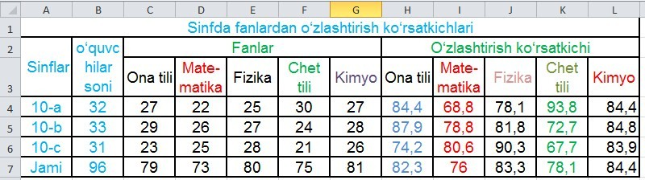
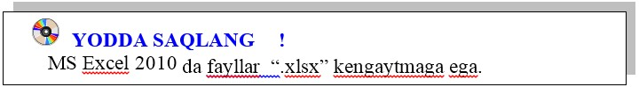

2-DARS. KATAKKA MUROJAAT NISBIY ABSOLYUT VA ARALASH MUROJAAT
Microsoft Excel 2010 elektron jadvallari yordamida arifmetik amallardan tashqari kataklarga turlicha murojaat qilish orqali amaliy masalalarni mazmunan sifatli yechish mumkin.
1-mashq. Sinflarda fanlardan o‘zlashtirish ko‘rsatkichlari aniqlansin.
Bajarish:
birinchi satr kataklari tugmasi yordamida kataklar bittaga keltirilib “Sinflarda fanlardan o‘zlashtirish ko‘rsatkichlari” matni yoziladi;
A2:A3 kataklar birlashtirilib “Sinflar” yozuvi katak o‘rtasiga joylashtiriladi;
B2:B3 kataklar birlashtirilib “O‘quvchilar soni” yozuvi katak o‘rtasiga joylashtiriladi;
C2:G2 kataklar birlashtirilib “Fanlar” yozuvi katak o‘rtasiga joylashtiriladi;
H2:L2 kataklar birlashtirilib “O‘zlashtirish ko‘rsatkichi” yozuvi katak o‘rtasiga joylashtiriladi;
C3:G3 hamda H3:L3 kataklarga fanlar nomlarii joylashtiriladi;
B4:B6 kataklarda guruhdagi o‘quvchilar soni kiritiladi;
C4:C6 dan G4:G6 gacha fanlardan o‘zlashtirgan o‘quvchilar soni kiritiladi;
B4:B6 sichqonchaning chap tugmasi bosilgan holda ajratib olinib, Excel 2010 tasmasidan Σ tugmasi bosiladi, natijada B7 da o‘quvchilar umumiy soni hosil bo‘ladi;
C7:G7 kataklarida fanlardan o‘zlashtirgan o‘quvchilarning barcha sinflar bo‘yicha umumiy sonini aniqlashni osonlashtirish uchun B7 katagini o‘ng past burchagiga sichqonchaning chap tugmasi bosilgan holda siljitib kerakli qiymatlarni hosil qilamiz. Qaralayotgan katakka ushbu murojaat usuli nisbiy murojaat deb ataladi;
10-a sinfida ona tilidan o‘zlashtirish ko‘rsatkichini aniqlash uchun H4 katagida = ni kiritib, fandan o‘zlashtirgan o‘quvchilar soni C4 ni sinfdagi o‘quvchilar umumiy soni B4 ga bo‘lib, natijani 100 ga ko‘paytirib yaxlitlab olamiz. O‘zlashtirish ko‘rsatkichini hamma vaqt guruhdagi o‘quvchilar soniga bo‘linganligi sabali B4 ni qo‘zg‘lmas qilish uchun, ushbu manzilga $B$4 ko‘rinisida, ya’ni absolut murojaat qilinadi;
Qolgan sinflar va boshqa fanlar bo‘yicha o‘zlastirish ko‘rsatkichlarini oson aniqlash uchun sichqonchaning chap tugmasi bosilgan holda B ustun va 7 satr bo‘yicha siljitamiz.
Shunday qilib nisbiy va absolut murojaat usullarini qo‘llab, qaralayotgan masalani yechish juda oson bajarildi. Natijada quyidagi elektron jadval hosil bo‘ldi:
Absolut va nisbiy murojaatlar birgalikda kelsa aralash murojaat deyiladi.
MS Excel 2010 uchun boshqa amaliy dasturlar bilan muqobillikni yanada yaxshiroq ta’minlash maqsadida hujjatlarni xotirada saqlash uchun yangi XML (eXstensible Markup Language – belgilanishning kengaytirlgan tili) formati ishlab chiqilgan. Bu yerda siqish texnologiyasini qo‘llash hisobiga fayllarning o‘lchami kichraydi va bu jadvallardan ixtiyoriy operatsion tizimda foydalanish imkoniyati paydo bo‘ldi.

1. Katakka absolut va nisbiy murojaatlarning farqini tushuntiring.
2. Excel 2010 elektron jadvallarini xotirada saqlash uchun qanday yangi texnologiya qo‘llaniladi?
3. Excel elektron jadvali yordamida sinfingizda fanlardan o‘zlashtirish monitoringini olib borish uchun ma’lumotnoma tayyorlang.

1. Absolut va nisbiy murojaatlarga doir masala tuzing va uni yeching.
2. Sinf o‘quvchilarini davomatini aniqlovchi jadval yarating.